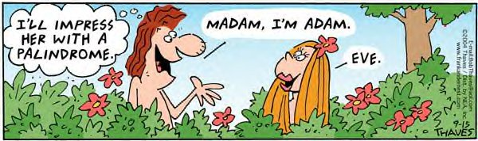

Para efeitos da nota atribuida à resolução de exercícios ao longo do semestre - Submeter até 23:59 de 6 de Novembro
(o problema continuará depois disponível para submissão, mas sem contar para a nota)
[para perceber o contexto do problema deve ler o guião da aula #02]
 Um palíndromo é uma palavra ou frase número cuja leitura é a mesma, quer se faça da esquerda para a direita. Num palíndromo consideramos apenas as letras e desconsideramos quaisquer outros caracteres (como por exemplo sinais de pontuação ou espaços). É também considerado que uma letra minúscula é igual à sua equivalente maiúscula (por exemplo 'a' é igual a 'A'.
A título de exemplo as seguintes linhas são todas palíndromos:
Madam, I'm Adam reviver ato idiota O bolo do lobo Socorram Marrocos A base do teto desaba Anotaram a data da maratona
A tua tarefa é descobrir quais as linhas do input que são palíndromos.
A primeira linha de input contém um número N (1 ≤ N ≤ 100), que corresponde ao número de linhas a processar.
Seguem-se exactamente N linhas, contendo cada uma com um máximo de 100 caracteres, sendo que nenhuma das letras do input tem acentos.
A primeira linha do output deve conter o número N. Devem seguir-se N linhas, contendo cada uma:
| Input | Output |
|---|---|
10 reviver ana abca abbc ato idiota palindromo Socorram Marrocos A base do teto desaba o bolo d lobo Madam, I'm Adam |
10 sim sim nao nao sim nao sim sim nao sim |
Estruturas de Dados (CC1007)
DCC/FCUP - Faculdade de Ciências da Universidade do Porto